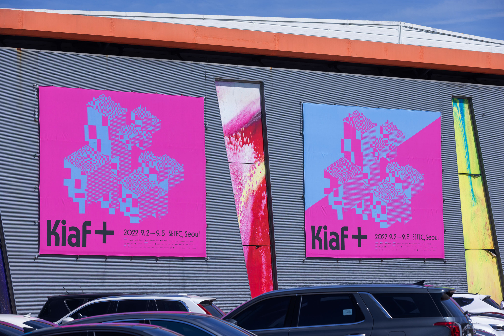
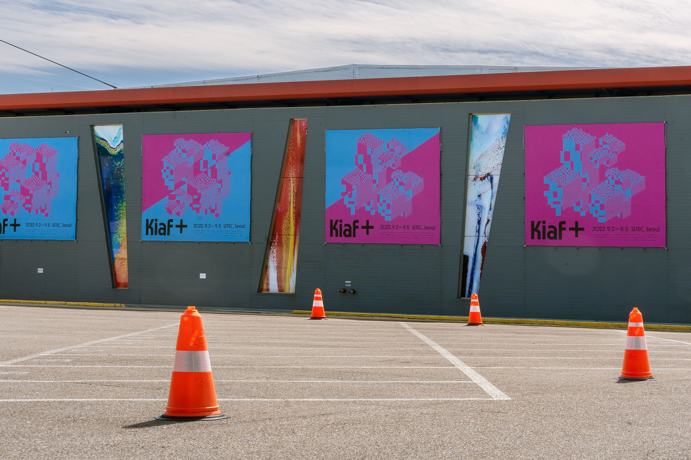
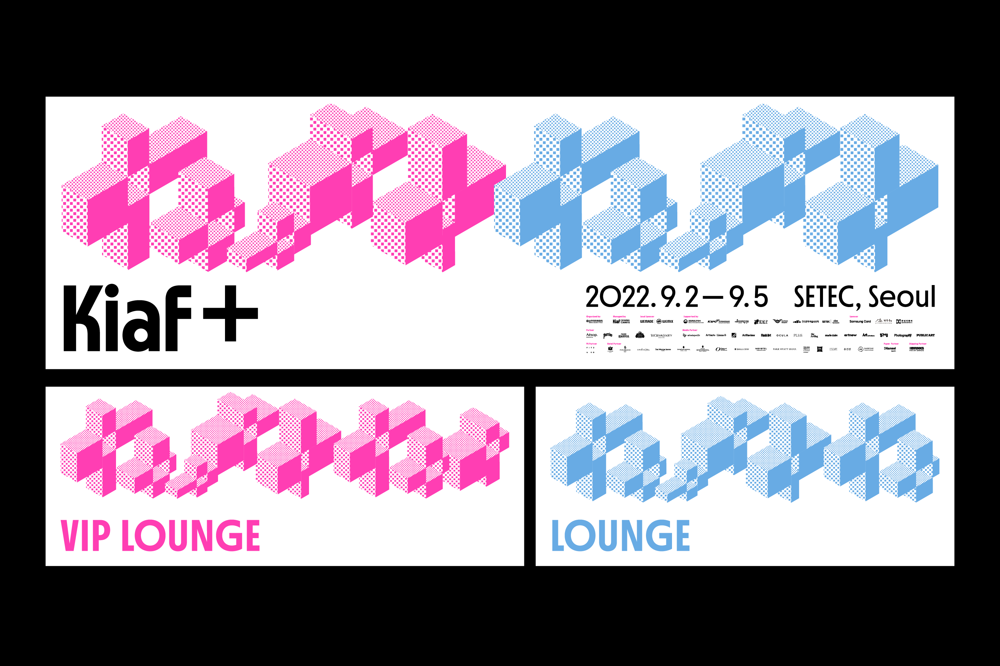
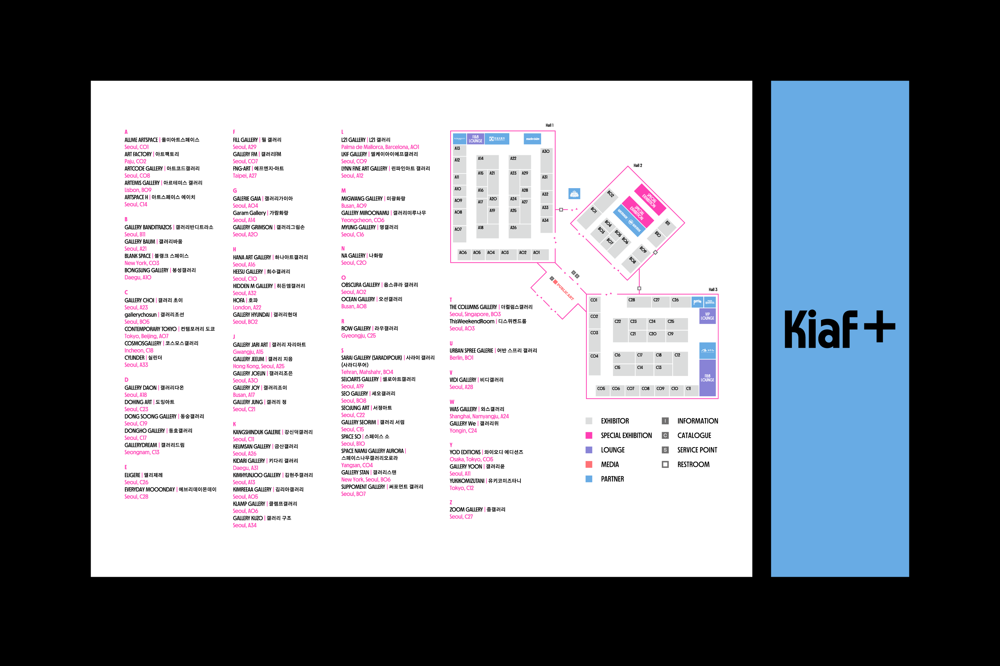
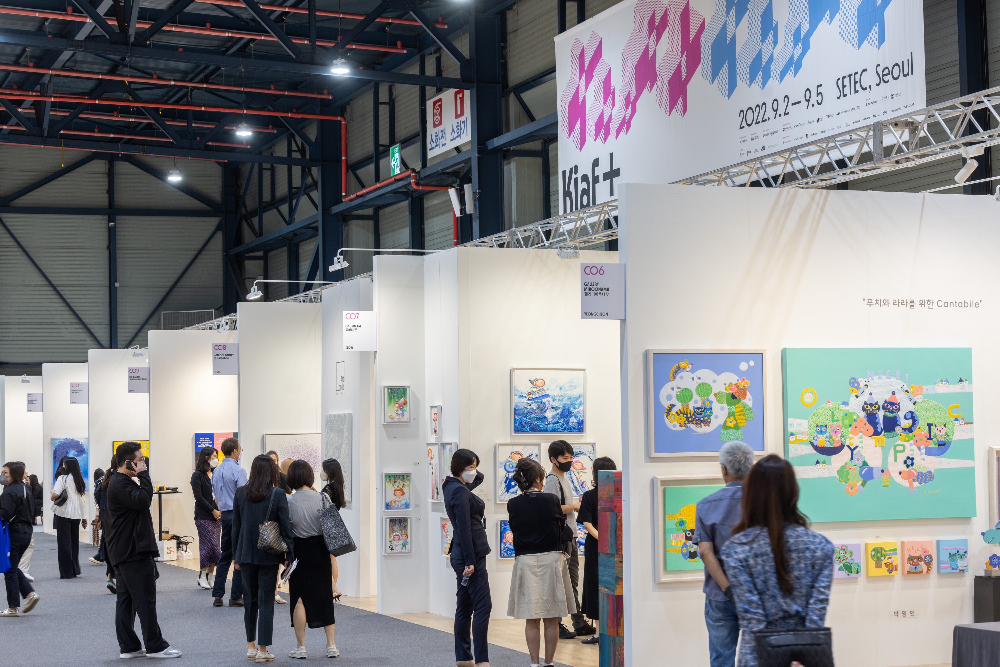

Worked in the sudio fnt
- Art direction: Woogyung Geel
- identity system: Hyungwon Cho, Youjeong Lee
- Catalog design: Doyeon Yang (plast)
- Graphic design: Whajin Shin, Younghyun Song
- Motion design: Ajeong Kim
- Photo: Creative Silver, courtesy of Kiaf SEOUL, studio fnt
Galleries Association of Korea
- Year: August 2022


Kiaf PLUS의 외부 배너들은 SETEC과 COEX 주변 지역에 적용되어
행사의 유연하고 생동감 있는 모습을 전달했습니다.



Photo: Creative Silver, courtesy of Kiaf SEOUL
작업에 참여한 Kiaf PLUS의 이미지만을 게시했습니다.
Kiaf PLUS의 아이덴티티 및 더 많은 작업물들은
https://studiofnt.com
에서 감상이 가능합니다.